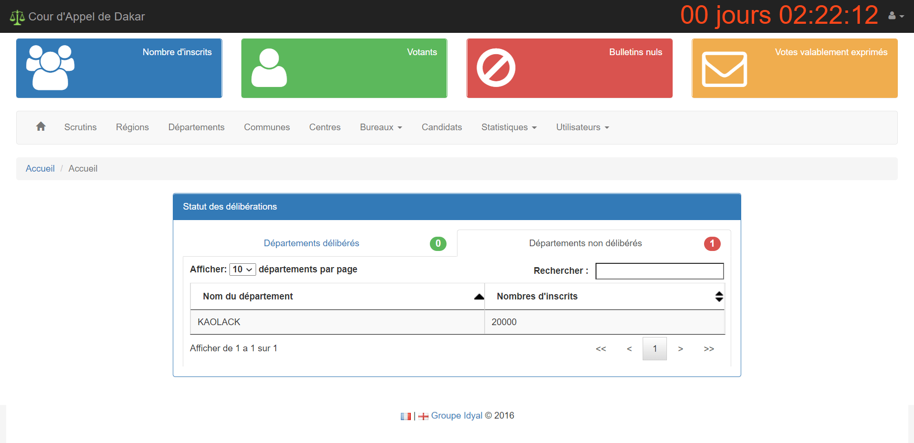

Lors des élections législatives de 2017, la cour d'appel de Dakar souhaite un logiciel capable de produire les résultats provisoires des élections en 24h. Mon entreprise à l'époque, Idyal SA, gagne le marché.
Le logiciel devait enregistrer l'ensemble des listes de chaque département et générer une maquette Excel qui sera envoyé aux CEDA (Commission Electorale Départementale Autonome). Ces dernières vont recevoir les procés verbaux des centres de vote et les charger dans l'application. L'application se charge du reste en désignant les députés aux scrutins majoritaire et proportionnel de manière entièrement automatisée.

Cette application a été réalisé en J2EE avec le framework Spring. Bootstrap est utilisé pour le design.